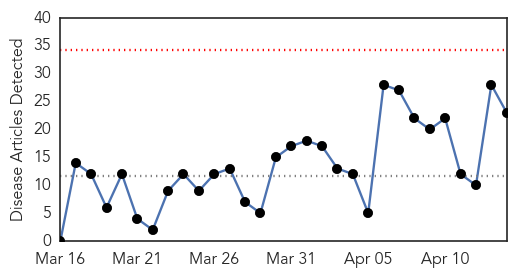
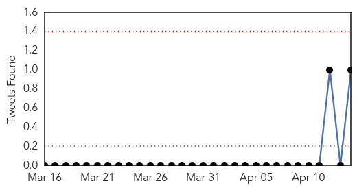
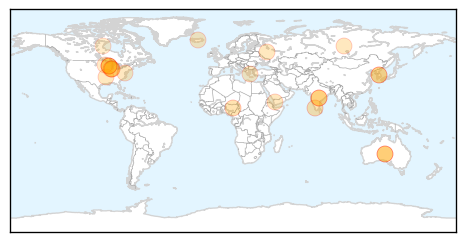
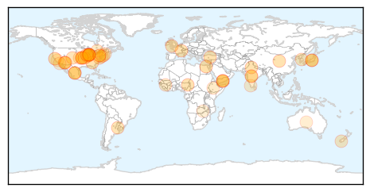

Influenza
30-Day Web Trend
0 alerts, 0 warnings

30-Day Twitter Trend
1 alerts, 0 warnings

Article Locations
Article Confidences

Top Articles:
- 0.999
- CDC dog flu statement, part 2
- 0.963
- Bird flu outbreak jolts Telangana
- 0.958
- Experts urge vaccinations after delay of influenza vaccine
- 0.953
- DATCP implementing a response
- 0.945
- Rapid diagnosis kit will take five minutes to test if you've really got the flu
- 0.932
- Bird flu outbreak jolts Telangana
- 0.912
- Bird Flu Escalates in Kano, Bauchi, Plateau, Articles
- 0.903
- Midwest dog-flu strain new to U.S., researchers say
- 0.845
- Dog Flu Epidemic Traced To Flu Strain In Asia, More Dangerous Than Initial Reports
- 0.803
- Bird Flu Alert in Telangana
- 0.775
- AI found in Wisconsin chicken flock
- 0.751
- April 13, 2015 Archives
- 0.751
- April 13, 2015 Archives
- 0.751
- April 13, 2015 Archives
- 0.751
- April 13, 2015 Archives
- 0.751
- April 13, 2015 Archives
- 0.739
- Bird flu spreads to Iowa turkey flock; 6th Midwest state
- 0.730
- H5N2 reaches Wisconsin, expands in SD, Minnesota
- 0.671
- Business briefing: Turkey growers put bird flu losses at $15.7M
- 0.607
- Avian flu impacts local poultry producers
- 0.603
- Dog flu worries rise as infections increase in Midwest
- 0.598
- Dog day care businesses hit by canine flu
- 0.525
- Local doggie daycare's temporary closure prompts dog flu concerns
Top Tweets:
- 0.971
- Control of a Reassortant Pandemic 2009 H1N1 Influenza Virus Outbreak in an Intensive Swine Breeding Farm http://t.co/H9kRpVQr3V
- 0.730
- Control of a H1N1 Influenza Outbreak in a Swine Breeding Farm: Vaccination & Enhanced Farm Management Practices http://t.co/rkHEDaWmJS
- 0.511
- RT: Statement on 2015 influenza vaccine availability | Queensland Health | @scoopit http://t.co/rHda3AeyMd
Unknown
30-Day Web Trend
0 alerts, 0 warnings

30-Day Twitter Trend
0 alerts, 0 warnings

Article Locations
Article Confidences

Top Articles:
- 0.992
- WHO: Several factors fueling surge of H5N1 in Egypt
- 0.954
- WHO Donor Appeal for Yemen - 14 April 2015 - Yemen
- 0.926
- Lawyers called in to represent those hit by norovirus outbreak at Exeter’s Toby Carvery
- 0.917
- Chicago Tribune
- 0.917
- Chicago Tribune
- 0.917
- Chicago Tribune
- 0.917
- Chicago Tribune
- 0.917
- Chicago Tribune
- 0.917
- Chicago Tribune
- 0.917
- Chicago Tribune
- 0.917
- Chicago Tribune
- 0.917
- Chicago Tribune
- 0.917
- Chicago Tribune
- 0.917
- Chicago Tribune
- 0.917
- Chicago Tribune
- 0.917
- Chicago Tribune
- 0.917
- Chicago Tribune
- 0.917
- Chicago Tribune
- 0.917
- Chicago Tribune
- 0.917
- Chicago Tribune
- 0.900
- Wandtv.com, NewsCenter17, StormCenter17, Central Illinois News-
- 0.875
- Four more test positive for Tuberculosis infection at Olathe Northwest High School
- 0.866
- Papal iPad goes under the hammer in Uruguay
- 0.840
- Spring brings worries over hantavirus
- 0.829
- Chicago Dog Flu Outbreak Likely Started in Asia
- 0.821
- Physical Plant Department recognizes need for water safety program at UNM
- 0.792
- Four More At Olathe Northwest High School Test Positive For TB
- 0.781
- Taking a bite out of Lyme disease
- 0.780
- UPDATE 2-U.S. finds 1st case of lethal bird flu in commercial chicken flock
- 0.758
- Yemen: WHO appeals for funding to address increasing health needs in Yemen
- 0.748
- Protect yourself from Powassan virus, Lyme disease
- 0.728
- Flu vaccines underway in Southland
- 0.720
- The link between thimerosal-laced vaccines and childhood autism, funding for community health centers
- 0.719
- An additional four people test positive for TB infection at Olathe Northwest
- 0.712
- Senator to speak at Lyme disease film screening
- 0.707
- Deadly tick-borne Powassan virus being eyed by N.J. health officials
- 0.706
- New Tick-Borne Virus, How Dangerous? - Story
- 0.699
- DHFS says all Blue Bell products recalled from main campus
- 0.665
- New Mexico duck tests positive for bird flu
- 0.659
- Prevention of Periprosthetic Joint Infection: Pre- and Intraoperative Considerations
- 0.658
- WHO donates ambulances and vehicles at World Health Day commemoration in South Sudan - South Sudan
- 0.641
- Ministry of Public Health attends preparatory meeting for African Health Ministers Conference
- 0.622
- Telangana government confirms first bird flu outbreak in Thorrur
- 0.621
- Yemen crisis 'getting worse by the hour' – UN humanitarian official
- 0.621
- Jajarkot disease claims four, toll reaches 16
- 0.610
- Stopping Women’s Next Biggest Killer
- 0.593
- All about Mycoplasma from Arizona DHIA
- 0.574
- Increase Seen in Data Breaches of Health Information
- 0.569
- More than 200 passengers on two cruise ships stricken with possible norovirus
- 0.558
- 200 People Aboard Celebrity Cruise and Royal Caribbean Cruise Lines Fall Ill To Norovirus
Showing top 50 articles...
Top Tweets:
-
No tweets found for Apr 14, 2015